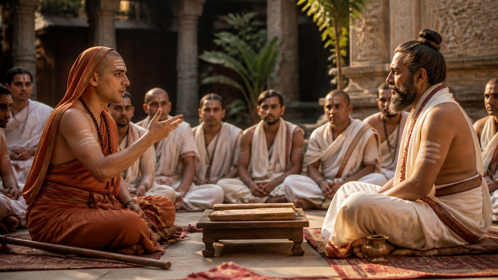

क्या विवाह करना आध्यात्मिक रूप से "नीचे" होना है? क्या भगवा पहन लेना ही ब्रह्मचर्य है? आचार्य उपेंद्र जी इस प्रवचन में इन धारणाओं को सीधे चुनौती देते हैं, और शास्त्रों के प्रमाण के साथ बताते हैं कि ब्रह्मचर्य (ब्रह्म में विचरण, सच्चा आत्म-संयम) वास्तव में क्या है।
क्या विवाह करना गलत है?
कई लोग, संन्यासी भी और सामान्य लोग भी, किसी के विवाह की बात सुनते ही "शिव शिव, राम राम" करने लगते हैं। मानो विवाह कोई दोष हो।
पर जरा देखिए। हमारे सप्तर्षि विवाहित हैं। हमारे जितने अवतार हैं, सब विवाहित हैं। हनुमान जी जैसे एक-आध अपवाद हैं। आचार्य जी कहते हैं कि अस्सी से नब्बे प्रतिशत संत-महात्मा विवाहित रहे हैं, और दस-बीस प्रतिशत या उससे भी कम अविवाहित। आचार्य जी कहते हैं कि इसमें कुछ भी योग्य या अयोग्य नहीं है।
संन्यासी भी तो किसी के पुत्र हैं
आचार्य जी एक सीधा प्रश्न रखते हैं: जिन्हें आप ब्रह्मचारी मानते हैं, उनका जन्म कहां से हुआ? क्या वे आकाश से आए? उनके माता-पिता की जिस क्रिया से वे जन्मे, वही तो काम पुरुषार्थ है।
श्रीकृष्ण स्वयं चार पुरुषार्थ (जीवन के चार लक्ष्य: धर्म, अर्थ, काम, मोक्ष) बताते हैं, और काम उनमें से एक है। इसलिए इसे कभी "गलत" मत कहिए।
ब्रह्मचर्य की असली परीक्षा
किसी का ब्रह्मचर्य जानने के लिए उसके शयनकक्ष में झांकने की जरूरत नहीं। उसे उसकी फलश्रुति (साधना से मिलने वाले परिणाम) से पहचाना जाता है।
ब्रह्मणि चरति इति ब्रह्मचर्यम्: जो ब्रह्म में विचरण करे, वही ब्रह्मचर्य है।
किसी ने विवाह नहीं किया, पर क्रोध पर नियंत्रण नहीं है, तो उसका क्रोध ही बता देता है कि ब्रह्मचर्य नहीं है। काम और क्रोध साथ चलते हैं। जो क्षमा नहीं कर सकता, जिसके पास हृदय नहीं, उसके मन में वासना अब भी चल रही है।
आचार्य जी याद दिलाते हैं कि मैथुन आठ प्रकार के होते हैं; यह केवल विवाह का प्रश्न नहीं। ब्रह्मचर्य दिखता है:
- मेधा शक्ति (तीव्र बुद्धि और धारणा) में
- चेहरे के तेज में
- चेहरे पर दिखने वाले यौवन में
क्या मैं अपने संयम को केवल बाहरी नियमों से मापता हूं, या अपने क्रोध, क्षमा और मन की स्थिति से भी?
गोपियों की अवस्था
गोपियों का वर्णन देखिए। शुकदेव जी और श्रीकृष्ण के सामने पूर्ण नग्न अवस्था में भी उन्हें लज्जा नहीं आती। क्यों?
क्योंकि जो आत्म-तत्व (अपने वास्तविक स्वरूप) की स्थिति तक पहुंच जाता है, वहां न पुरुष बचता है, न स्त्री। वहां भय भी नहीं रहता। यही ब्रह्मचर्य की अवस्था है।
तो क्या यह केवल विवाह न करने से, या केवल भगवा पहनने से आ सकती है?
या तो शास्त्रोक्त काम, या पूर्ण ब्रह्मचर्य
आचार्य जी खुली चुनौती के साथ कहते हैं: जो गुरु दूसरों को, फिल्म वालों को या किसी और को "गलत" कहते हैं, वे पहले ग्रंथ पढ़ें। आचार्य जी बताते हैं कि शास्त्रोक्त काम स्वीकार्य है, पर कोई फालतू काम नहीं।
यह पति-पत्नी पर भी लागू है। रास्ते दो ही हैं:
- शास्त्रोक्त काम: जैसा गीता और बृहदारण्यक उपनिषद के छठे अध्याय में सिखाया गया है
- पूर्ण ब्रह्मचर्य: हनुमान जी जैसा, स्वामी विवेकानंद जैसा
दोनों के बीच का कुछ भी नहीं। आचार्य जी के अनुसार असली समस्या तो बीच वाले की है।
शास्त्र क्या कहते हैं
महाकालिका विद्या कहती है: एक ओर जो दिन भर शिव का स्मरण और उपासना कर रहा है, और दूसरी ओर जो रात भर पूर्ण रति में है पर दुर्गा, परमेश्वर या गुरु का नाम ले रहा है, ये दोनों स्मरहर शिव के समान हो जाते हैं।
आचार्य जी प्रमाण के लिए महाकाली स्तव, काली की विद्या और भैरव तंत्र पढ़ने को कहते हैं। और भगवद्गीता में श्रीकृष्ण स्वयं कहते हैं:
धर्माविरुद्धो भूतेषु कामोऽस्मि भरतर्षभ॥
"प्राणियों में धर्म के अनुकूल काम मैं हूं।"
(श्रीमद्भगवद्गीता ७.११)
प्रजनश्चास्मि कन्दर्पः॥
"सृष्टि रचने वाला कामदेव मैं हूं।"
(श्रीमद्भगवद्गीता १०.२८)
इसलिए दोनों, शास्त्रोक्त गृहस्थ और पूर्ण ब्रह्मचारी, ब्रह्मचारी ही कहलाते हैं।
स्त्रियां पहचान लेती हैं
ब्रह्मचर्य की एक बड़ी परीक्षा है: उस व्यक्ति के सामने स्त्रियां कितना सुरक्षित अनुभव करती हैं। चाहे योगी हो या फिल्म अभिनेता। और उल्टा भी सच है: किसी स्त्री को देखकर पुरुष को वह केवल नाच-गाने वाली या "बाहर वाली" न लगे।
भगवान ने स्त्रियों को अधिक अंतर्ज्ञान (intuition) दिया है। गीता में श्रीकृष्ण कहते हैं:
कीर्तिः श्रीर्वाक्च नारीणां स्मृतिर्मेधा धृतिः क्षमा॥
"स्त्रियों में कीर्ति, श्री, वाणी, स्मृति, मेधा, धृति और क्षमा मैं हूं।"
(श्रीमद्भगवद्गीता १०.३४)
हां, आचार्य जी कहते हैं कि प्रेम-प्रसंग में, जब वे बौद्धिक स्तर से उतरकर भावनात्मक स्तर पर आ जाती हैं, तब भूल हो सकती है। बाकी समय उनका बोध गहरा होता है।
बस की बीस मिनट की यात्रा
आचार्य जी का प्रिय उदाहरण: बस में खिड़की की सब सीटों पर लड़के बैठे हों, तो बीस मिनट की यात्रा के लिए भी लड़की सबसे सुरक्षित लड़के के पास जाकर बैठती है। कोई पीछा करे, तो उसकी गलत नजर वह तुरंत पहचान लेती है।
लड़कों में यह समझ प्रायः नहीं होती; कोई योगी ही चाल पहचान पाता है। लड़की शायद यह न बता पाए कि यह संयम शास्त्रोक्त काम से है या ब्रह्मचर्य के संयम (abstinence) से, पर दोनों स्थितियां एक समान कही गई हैं। आचार्य जी कहते हैं कि हमें इन्हें अलग करने का कोई अधिकार नहीं है।
भगवा बनाम गृहस्थ
ऋषि-मुनियों तक सबके विवाह और संतानें थीं। यदि यम (आत्म-संयम के नियम) का सच्चा पालन है, तो गृहस्थ गुरु के सामने भी भगवा वाले को नतमस्तक होना पड़ता है।
संन्यासी आज श्रीकृष्ण की ही गीता सिखाते हैं। सब श्रीराम की कथा पढ़ते हैं, रामराज्य चाहते हैं। क्या कहेंगे कि वे गृहस्थ थे, "सीते सीते" कहकर रोए, इसलिए कम थे?
आचार्य जी स्पष्ट कहते हैं: जिसे यह समझ नहीं आता, वह कम बोले। वह अभी विद्यार्थी है।
शंकराचार्य और मंडन मिश्र
जब आदि शंकराचार्य का मंडन मिश्र से शास्त्रार्थ हुआ और मंडन मिश्र हार गए, तब उनकी पत्नी ने शंकराचार्य जी से सीधे काम पर ही प्रश्न किया।
शंकराचार्य जी ने जाना कि अनुभव के बिना उत्तर नहीं दे पाएंगे। परकाया प्रवेश विद्या (दूसरे शरीर में प्रवेश की योग-विद्या) से उन्होंने एक मृत राजा के शरीर में जाकर वह अनुभव लिया। यह प्रसंग स्वयं दिखाता है कि यह विषय उपेक्षा का नहीं, समझ का है।

ब्रह्मचर्य का फल: वीरता
जिसका हृदय साफ है, जिसमें सतोगुण है, उसे यह सीधी बात समझ आती है। पुराण, उपनिषद और गीता, सब यही कहते हैं।
सच्चे ब्रह्मचर्य से व्यक्ति में भैरव शक्ति आती है। वह वीर बनता है, इतना कि बड़े से बड़ा शत्रु भी अपने आप झुक जाता है।
क्या मेरे जीवन में वह तेज, साहस और दूसरों के लिए सुरक्षा का भाव है, जो सच्चे संयम का फल है?
मुख्य बातें
- विवाह आध्यात्मिक रूप से अयोग्य नहीं; अधिकांश ऋषि, अवतार और संत विवाहित थे।
- काम चार पुरुषार्थों में से एक है; शास्त्रोक्त काम गलत नहीं।
- ब्रह्मचर्य शयनकक्ष से नहीं, फलश्रुति से परखा जाता है: मेधा, तेज, यौवन, क्रोध पर नियंत्रण, क्षमा।
- दो ही मार्ग हैं: शास्त्रोक्त काम या पूर्ण ब्रह्मचर्य; समस्या बीच वाले की है।
- स्त्रियों का सुरक्षित अनुभव करना ब्रह्मचर्य का एक बड़ा संकेत है।
- सच्चे ब्रह्मचर्य का फल है भैरव शक्ति और वीरता: यम का सच्चा पालन।